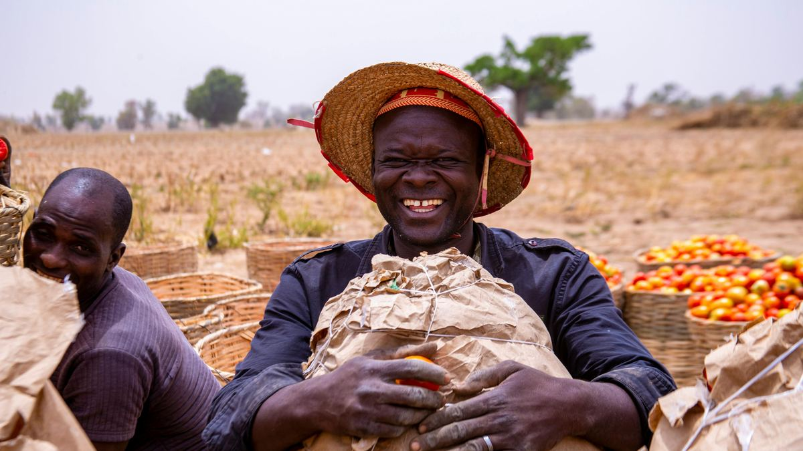
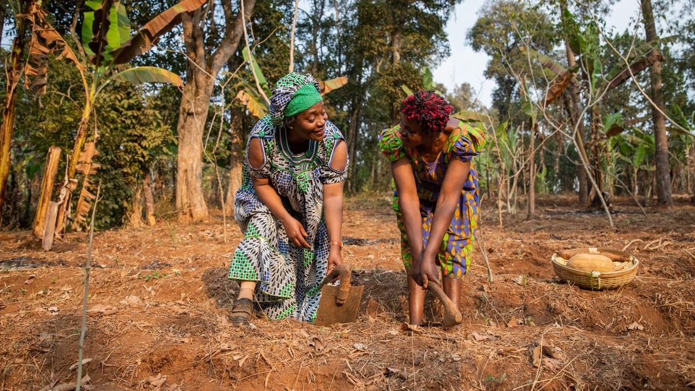

FURROW is Tanzania's agricultural market intelligence and trading platform, built in Dar es Salaam by Gabrison Capital. We exist for one reason: to remove the information gap that costs Tanzanian farmers and honest traders money every single day.
Tanzania's agricultural markets run on information most participants cannot see. Official reference prices are published by the Ministry of Agriculture, the Tanzania Coffee Board, the Cotton Development Trust and the Cashewnut Board — but they sit in bulletins and matrices that rarely reach the farm gate. A farmer selling maize in Njombe, a buyer sourcing cashews in Mtwara, a transporter quoting a corridor rate — each negotiates partly blind.
That blindness has a price. Produce sells below fair value. Buyers overpay or walk away from deals they can't verify. Trust, the scarcest commodity in any market, stays scarce — and everyone transacts smaller and slower than they could.

Today, FURROW publishes official reference prices for over 40 commodities across Tanzania's regions, alongside the news, regulations and tender opportunities that move the sector — updated with every official bulletin, free for anyone to read.
At launch, FURROW becomes a full trading platform: suppliers list produce with their own prices shown beside the government reference rate; buyers browse, negotiate and order; transporters pick up confirmed jobs; and the FURROW Mediation Service physically verifies stock, handles documentation and holds payment in escrow until delivery is confirmed.
FURROW tracks market data across 26 regions of Tanzania through our reporting network, with qualified field personnel physically present in six locations for stock verification and mediation work:

We measure success in one currency: fairer deals. Every transaction where a farmer sees the official rate before accepting an offer, every buyer who orders from another region without travelling to verify stock, every dispute resolved in 48 hours instead of never — that is the platform working.
Tanzania is the beginning. The same information gap exists across East Africa's agricultural corridors, and FURROW is built to cross them — expanding along the trade routes that already connect the region's farmers to its markets, with cross-border mediation and multi-language trade built in from day one.
FURROW is developed and operated by Gabrison Capital, a Tanzanian company based in Dar es Salaam working across creative media and agriculture. Questions, partnerships and press: info@gabrisoncapital.com